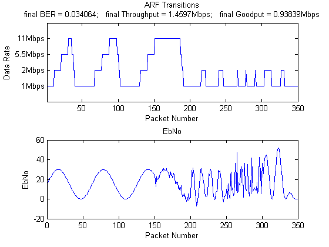

Contents
clear all,close all;
Simulation Parameters
EbNo1 = 15*(1+sin([1:150]/10));
EbNo2 = 15*(1+sin([1:50]/10)) + 3*randn(1, 50);
EbNo3 = 15*(1+sin([1:50]/2)) + 3*randn(1, 50);
EbNo4 = abs(20*randn(1, 50));
EbNo5 = abs(15*(1+sin([1:50]/10)).*(1+sin([1:50]/3)));
EbNo = [EbNo1 EbNo2 EbNo3 EbNo4 EbNo5];
NumPackets = length(EbNo);
PacketSizeBits = 8192;
SamplesPerChip = 8;
ARF Parameters
ERR_THRESH = PacketSizeBits/500;
SUCCESS_THRESH = 10;
RateMat=zeros(NumPackets,1);
Setup
modulateFunctions = {@(x) barkermod(x, 1), @(x) barkermod(x, 2),...
@(x) cckmod(x, 4), @(x) cckmod(x, 8)};
demodulateFunctions = {@(x,y) barkerdemod(x, 1), @(x,y) barkerdemod(x, 2),...
@(x,y) CCKdemod(x, 4, y), @(x,y) CCKdemod(x, 8, y)};
BitsPerSymbols = [1, 2, 4, 8];
SpreadingRates = [11, 11, 8, 8];
DataRates = [1, 2, 5.5, 11];
calcSnr = @(rate,EbNo) EbNo +10*log10(BitsPerSymbols(rate))...
-10*log10(SpreadingRates(rate)*SamplesPerChip);
Main Loop
rate = 1; TotalBits = 0; ErrorBits = 0;
numSuccess = 0; numFail = 0; probe = false;
numTotalSuccess = 0;
for packet = 1:NumPackets
snr = calcSnr(rate,EbNo(packet));
TxBits = randi([0 1],PacketSizeBits,1);
TxChips = modulateFunctions{rate}(TxBits);
[Samples,h,FilterDelayInChips] = TxFilter(TxChips,SamplesPerChip);
ChannelOutput = awgn(Samples, snr, 'measured');
[RxChips,TotalDelayInBits] = RxFilter(ChannelOutput,h,...
SamplesPerChip,FilterDelayInChips,...
BitsPerSymbols(rate),SpreadingRates(rate));
RxBits = demodulateFunctions{rate}(RxChips, TotalDelayInBits);
TotalBits = TotalBits+length(RxBits)-TotalDelayInBits;
NewErrorBits = sum(TxBits(1:end-TotalDelayInBits)~=...
RxBits(TotalDelayInBits+1:end));
ErrorBits = ErrorBits + NewErrorBits;
RateMat(packet)=rate;
if NewErrorBits > ERR_THRESH
numFail = numFail+1;
if (numFail == 2 || (numFail == 1 && probe)) && rate > 1
rate = rate-1; numSuccess = 0; numFail = 0;probe = false;
end
else
numSuccess = numSuccess+1; numTotalSuccess = numTotalSuccess+1;
if numSuccess == SUCCESS_THRESH && rate < 4
rate = rate+1; numSuccess = 0; numFail = 0; probe = true;
else
probe = false; numFail = 0;
end
end
end
finalBER = ErrorBits/TotalBits;
totalTime = sum(RateMat==1)*PacketSizeBits/1e6 +...
sum(RateMat==2)*PacketSizeBits/2e6 +...
sum(RateMat==3)*PacketSizeBits/5.5e6 +...
sum(RateMat==4)*PacketSizeBits/11e6;
finalGoodput = PacketSizeBits*numTotalSuccess/totalTime/1e6;
finalThroughput = NumPackets*PacketSizeBits/totalTime/1e6;
Plot ARF transitions
h = figure('Name','ARF Transitions'); hold on;
subplot(211); plot(1:NumPackets,RateMat);
xlabel('Packet Number'); ylabel('Data Rate');
xlim([1 NumPackets]); ylim([0 5]);
title({'ARF Transitions', ['final BER = ' num2str(finalBER)...
'; final Throughput = ' num2str(finalThroughput) 'Mbps',...
'; final Goodput = ' num2str(finalGoodput) 'Mbps']});
set(gca,'yTickLabel',{'', '1Mbps','2Mbps','5.5Mbps','11Mbps', ''});
subplot(212); plot(1:NumPackets, EbNo);
xlabel('Packet Number'); ylabel('EbNo');
title('EbNo');
